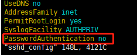
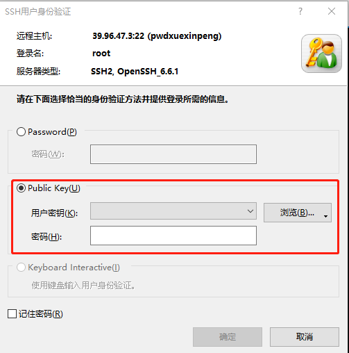
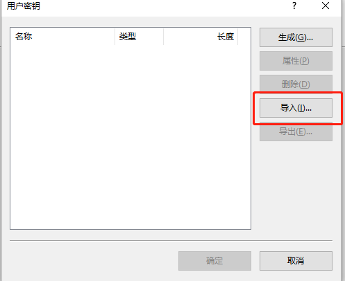
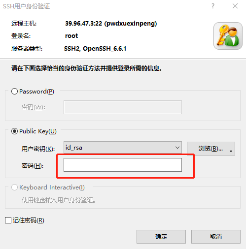

如果你购买了阿里云,华为云,或者腾讯云,登陆的方式默认都是密码登陆,这样你的服务器就会暴露在外面,在你不知道的情况下,就会被人暴力破解
基于秘钥的安全验证就是给自己创建一对秘钥(公钥和私钥), 公钥放到服务器存储起来, 当你登陆的时候获取到你的私钥, 会想服务器发送请求,服务器就开始从根目录开始找公钥, 然后将私钥跟公钥比较, 一致就可以登陆了
本次我们服务器就将改为账号+秘钥登陆,提高安全性, 这里以centos7.3为例子
1. 先登陆到你的服务器, 生成秘钥
1 | ssh-keygen -t rsa |
返回信息
1 | Generating public/private rsa key pair. |
2. 之后将~/.ssh/id_rsa.pub 复制到 ~/.ssh/authorized_keys,并且赋予权限
1 | cat ~/.ssh/id_rsa.pub >> ~/.ssh/authorized_keys |
3. 修改配置文件
随后修改/etc/ssh/sshd_config 文件，将PubkeyAuthentication 后面的值都改成yes ，保存。
4. 可选(关闭密码登陆)
修改/etc/ssh/sshd_config 文件将PasswordAuthentication yes 修改成 PasswordAuthentication no(最后一行)

5. 重启ssh服务
1 | sudo service sshd restart |
6. 测试秘钥登陆
将服务器目录中的秘钥~/.ssh/id_rsa下载到本地
windows为例, 我用的是xshell 7

浏览—-选择用户秘钥

将本地的秘钥导入
这个就是生成秘钥时输入的密码

之后就进入到服务器了
这样安全性确实大大提升了，但是也不是滴水不漏，因为你本地电脑也是有可能被入侵的
I'm so cute. Please give me money.


- 本文链接：https://x3cp.cn/2021/03/30/%E6%9C%8D%E5%8A%A1%E5%99%A8%E7%99%BB%E9%99%86%E6%94%B9%E4%B8%BA%E7%A7%98%E9%92%A5%E7%99%BB%E9%99%86/
- 版权声明：本博客所有文章除特别声明外，均默认采用 许可协议。